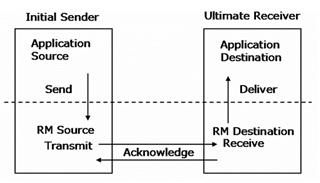
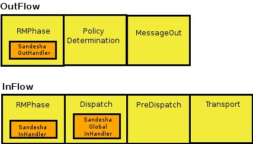
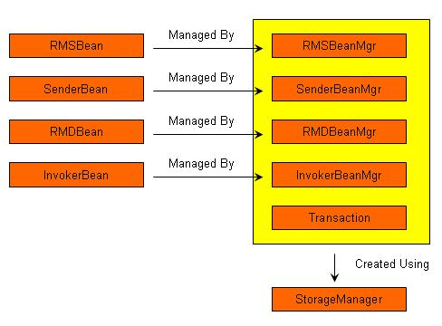

Sandesha2 gives reliable messaging capabilities to Axis2. From the point of view of the Axis2 engine, Sandesha2 is a module. When this module is engaged to a service, clients have the option of invoking it in a reliable manner. In the client side Sandesha2 module can be used to interact with existing reliable Web services.
According to the Web service-ReliableMessaging (WS-RM) specification which is implemented by Sandesha2, reliable communication happens between two endpoints. These endpoints are called the RM Source (RMS) and the RM Destination (RMD). Before communication, RMS and RMD perform a message exchange to create a relationship called a Sequence between them. A Sequence is always identified by a unique Sequence Identifier.
Each message of a sequence is numbered, starting from one. In Sandesha2 the maximum number of messages a sequence can support is 2 64 (size of long data type). Of course practically this may be limited by the memory available for your system . The message number is used by the destination to support additional delivery assurances. This will be explained later in this tutorial.
The reliability is obtained basically using acknowledgements. RMS is required to send each message one or more times to the RMD. RMD sends back acknowledgements to notify the successful reception of messages. After receiving an acknowledgement for a certain message RMS can stop the retransmission of that message.
When all messages of a certain sequence have been successfully transmitted to RMD, RMS sends a TerminateSequence message. If RMD receives this message it can free any resources allocated for this sequence. Otherwise resource de-allocation will happen based on a timeout.
Following diagram explains operation of the RMS and the RMD.
 Sandesha2 supports two reliable messaging specifications. It fully supports the WS-ReliableMessaging February 2005 specification and February 2007 specification which was created by collaborative efforts of several companies.
Sandesha2 components are used in a completely symmetric manner, in the server side and client as shown in the diagram above. Lets just consider a single side for this discussion.
Sandesha2 adds three handlers to the execution chain of Axis2. Two of these handlers are added to a special user phase called 'RMPhase' of in and out flows. The other handler is added to the predispatch phase of the inFlow. These handlers and their functions are given below.
This handler is added to the predispatch phase of the inFlow. Since this is a global phase, this handler will be called for each and every message that comes to the Axis2 system. To maximize performance, the very first function of this handler is to identify whether the current message can be processed by it. It checks whether the message is intended for a RM enabled service, and if so, check the message type to further verify whether it should be processed globally. This handler was placed to perform functions that should be done before the instance dispatching level of Axis2.
Some of these functions are given below:
This is added to the RMPhase of the inFlow. Since RMPhase is a user phase, this handler will only be invoked for messages that are aimed at RM enabled service. This handler processes the SOAP header of the message. Acknowledgement headers, Acknowledgement requests and sequence processing headers are processed by this handler. Sandesha2 has a special set of classes called message processors which are capable of processing each type of message. Depending on the type, the message is send through the 'processInMessage' method of the message processor which will do the further processing of it.
This handler is responsible for doing the basic outFlow processing. This will first generate an ID called the Internal Sequence ID which is used to identify the sequence this message should belongs to. All the messages having the same Internal Sequence ID will be sent within a single sequence. An Internal Sequence ID will have a corresponding Sequence ID which would be obtained after the Create Sequence message exchange. In the client side the Internal Sequence ID is the combination of the wsa:To address and a special value given by the client called Sequence Key. In the server side the Internal Sequence ID is a derivation of the Sequence ID value of the messages of the incoming sequence.
Before sending the message through other handlers the SandeshaOutHandler will send it through the 'processOutMessage' method of the respective message processor.
All the Reliable messaging operations (CreateSequence/CloseSequence etc) have the RMMessageReceiver as the ultimate receiver for the message. The RMMessageReceiver will identify the type of RM control message. Sandesha2 has a special set of classes called message processors which are capable of processing each type of message. Depending on the type, the message is send through the 'processInMessage' method of the message processor which will do the further processing of it.
Sender is responsible for transmission and retransmission of messages. The Sender is a separate thread that keeps running all the time. At each iteration Sender checks whether there is any messages to be sent. If there is any, it is sent to the destination. Sender also identifies messages that has to be retransmitted and keep re-sending them until a maximum limit decided by Sandesha2 policies is exceeded.
InOrderInvoker is another separate thread that is started by the Sandesha2 system. This is started only if Sadesha2 has been configured to support in-order delivery assurance. InOrderInvoker makes sure that it invokes messages of a sequence only in the order of message numbers.
Sandesha2 storage framework is one of the most important parts of the Sandesha2 system. This was designed to support the RM message exchange while being independent of the storage implementation used. The storage framework defines a set of interfaces and abstract classes that can be implemented by a particular storage implementation. Sandesha2 system comes with an in-memory storage implementation. There can be other implementations based on different databases and persistence mechanisms.
Following diagram gives a brief view of the Sandesha2 storage framework.
Storage framework defines several beans that extend the RMBean abstract class. They are given below:
There are four bean manager interfaces corresponding to each of above beans.They are as follows:
Sandesha2 also defines a StorageManager interface that defines methods to create each of these bean managers and to create a Transaction object which should implement the Transaction interface. Transaction interface defines commit and rollback methods. The StorageManager interface is also responsible for storing, updating, retrieving and deleting of MessageContext instances for a sequence.
Collectively each Sandesha2 storage implementation should have following classes:
These classes can be packed as a jar archive and added
to the classpath. The name of the StorageManager implementation class must be
mentioned in Sandesha2 policy configurations. This will be picked up after a
restart of the the Axis2 engine.
InMemory
Implementation
As discussed, Sandesha ships with an
InMemory implementation of the storage manager. Perhaps the most significant
point of interest in this implementation is the transaction model. Transactions
are scoped by thread: a transaction can only be associated with one thread ever
and a thread can only have one transaction active at any single point in time.
Any storage manager beans touched by the transaction will be enlisted into the
transaction in such a way that any other transactions that attempt to touch the
beans will block until the enlisting transaction completes (either commits or
rollsback).
Sandesha2 can provide an in-order exactly-once delivery assurance. The ordering (in-order) is optional. You can disable it using Sandesha2 policy configurations. The ordering is done using the InOrderInvoker thread that was introduced earlier.
If ordering (in-order) is enabled, SandeshaInHandler pauses the execution of an incoming application message. As a result of this, the message will not go through rest of the handler chain in the first invocation. Note that it also starts the InOrderInvoker thread if it is stopped. This thread goes through the paused messages and resume each of them in the order of message numbers.
If in-order invocation is not enabled the SandeshaInHandler will not pause the messages and they will go in their full execution path in one go.
The delivery assurance to be used depends on your
requirements. If you want the invocation to be as fast as possible, and you do
not care about ordering, disable in order invocation. But if you want message to
be invoked in the order they were sent by the client, you have to enable it.
There could be a considerable performance improvements if this feature is
disabled. Specially if majority of the messages come out of order. In the
current implementation, each message (identified by sequenceID and message
number) will be invoked only once. So exactly once delivery assurance is
guaranteed. You cannot ask Sandesha2 to invoke the same message more than
once.
Configuring
Sandesha
Sandesha is configured using various means, and
this configuration is made accesible in the SandeshaPolicyBean object, which is
stored in the AxisDescription as a property at module init time. The
configuration data can be loaded by examing the policies in the sandesha
module.xml, from default values (if there is nothing in the module.xml) or from
property files if explicitly driven by client code.
Some of the possible
options to configure are: AcknowledgementInterval: time between
sending acknowledgements
RetransmissionInterval: time
between retransmitting messages
MaximumRetransmissionCount:
max count to retry sending unacknowledged
messages
ExponentialBackoff: if true the time between
message retransmission attempts will grow
exponentially.
InactivityTimeout: time that the sequence is
allowed to remain inactive before it is cleaned
up.
SequenceRemovalTimeout: time to wait after a sequence is
terminated before removing the sequence state from the
store.
InvokeInOrder: if true messages will only be
delivered to the webservice endpoint in the exact order they were sent by the
RMS.
MessageTypesToDrop: the set of message types (stored by
number, see Sandesha2Constants.MessageTypes) that are elligible to drop by the
RMS.
StorageManager:InMemoryStorageManager: the classname to
use for the volatile
storagemanager
StorageManager:PermanentStorageManager: the
classname to use for the non-volatile
storagemanager
SecurityManager: the class to use in order to
process any WS-Security tokens associated with a sequence. A NO-OP
implementation is shipped with Sandesha.
ContextManager: the
class to use to ensure the inOrderInvoker thread uses a specific context. A
NO-OP implementation is shipped with Sandesha.
EPRDecorator:
the class to use in order to augment any endpoint references with any extra
information required. A NO-OP implementation is shipped with
Sandesha.
MakeConnection:Enabled: if true, makeConnection
messages will be used when sandesha is performing synchronous
messaging.
MakeConnection:UseRMAnonURI: if true,
makeConnection messages used for synchronous messaging will use the RM anonymous
URI.
MakeConnection:UseMessageSerialization: if true
messages are serialized into binary when sbeing stored in the
storageManager.
EnforceRM: if true any non-RM messages
recieved by the RMD will cause an exception to be shown.
This part explains how Sandesha2 framework works internally for the most common RM scenario, which is the sending of a couple of Ping messages from a client to the server. We will mainly look at how Sandesha2 uses its storage to do the RM message exchange correctly. While going through the following, keep the RM Beans and their fields which were mentioned earlier, in mind.
Lets assume that the message number of this message is 2.